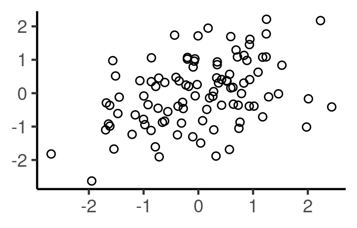

# Option 1
penguin_sub %>%
select(flipper_length_mm, body_mass_g) %>%
cor()
# Option 2
penguin_sub %>%
summarize(cor = cor(flipper_length_mm, body_mass_g) )
# Option 3
cor(penguins$flipper_length_mm, penguins$body_mass_g)Regression
Chapter 5.0 - 5.1
Correlation Coefficient (Ex1)

Correlation coefficient: a number between -1 and 1 indicating the strength of the linear relationship between two numerical variables.
The correlation coefficient (\(r\)) between a variable with values \(x_1,...,x_n\), and a variable with values \(y_1,...,y_n\) is defined as:
\(Correlation(r) = \frac{\sum_{i=1}^n(x_i-\bar{x})(y_i-\bar{y})}{\sqrt{\sum_{i=1}^n(x_i-\bar{x})^2\sum_{i=1}^n(y_i-\bar{y})^2}},\)
where \(\bar{x}\) is the mean of \(x_1,...,x_n\), and \(\bar{y}\) is the mean of \(y_1,...,y_n\)
Is correlation between two variables \(X\) and \(Y\) the same as the correlation between \(Y\) and \(X\)?
Correlation Coefficient (Ex1)

Match the following graphs with the most appropriate correlation coefficient:
- a) -0.2 b) 0 c) 0.4 d) 0.7

Correlation Coefficient (Ex2)

Match the following graph with the most appropriate correlation coefficient:
- a) -1 b) -0.75 c) -0.9 d) 1

Correlation Coefficient (Ex3)

Match the following graph with the most appropriate correlation coefficient:
Amount of gas in a car vs distance traveled .
a . Exactly -1
b . Between -1 and 0
c . About 0
d . Between 0 and 1
e . Exactly 1
Correlation does not imply causation, as is evident from this example.
Example 1: Predicting

Recall the equation of the regression line is
\[\widehat{\hbox{body_mass_g} } = -4111.3 + 40.3*\hbox{flipper_length}\]
You find a new male penguin from the Chinstrap species and Dream island that has a flipper length of 220 mm. What do you predict his weight to be in grams?
```{r}
-4111.3 + 40.3*220
```[1] 4754.7